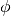
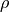
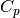

2.1. Physical model¶
Here we present the geometry with the system of coordinates that Sesame assumes, and the set of equations that it solves.
2.1.1. Geometry and governing equations¶
Our model system is shown below. It is a semiconductor device connected to two
contacts at  and
and  . The doped regions are drawn for the
example only, any doping profile can be considered.
. The doped regions are drawn for the
example only, any doping profile can be considered.
The steady state of this system under nonequilibrium conditions is described by the drift-diffusion-Poisson equations:
(1)¶
with the currents
(2)¶
where are the electron and hole number densities, and 
is the electrostatic potential. is the charge current density
of electrons (holes). Here is the absolute value of the electron
charge.  is the local charge, is the dielectric
constant of the material, and is the permittivity of free space. is the electron/hole
mobility, and is related the diffusion by , where is Boltzmann’s constant and is the temperature. is the generation rate density,  is the
recombination and we denote the net generation rate . The natural
length scale is the Debye length, given by
is the
recombination and we denote the net generation rate . The natural
length scale is the Debye length, given by  , where is the concentration relevant to the problem. Combining
Eqs. (1) and Eqs. (2), and scaling by the Debye length leads to
the following system
, where is the concentration relevant to the problem. Combining
Eqs. (1) and Eqs. (2), and scaling by the Debye length leads to
the following system
where is the dimensionless spatial first derivative operator, and the dimensionless variables are
with a diffusion coefficient corresponding to our choice of
scaling for the mobility . See the
Scaling() class for the implementation of these scalings.
We suppose that the bulk recombination is through three mechanisms: Shockley-Read-Hall, radiative and Auger. The Shockley-Read-Hall recombination takes the form
where , where  is the
energy level of the trap state measured from the intrinsic energy level,
is the
energy level of the trap state measured from the intrinsic energy level,  () is the conduction (valence) band effective density of
states. The equilibrium Fermi energy at which
is the intrinsic energy level .
is the bulk lifetime for
electrons (holes). It is given by
() is the conduction (valence) band effective density of
states. The equilibrium Fermi energy at which
is the intrinsic energy level .
is the bulk lifetime for
electrons (holes). It is given by
(3)¶
where is the three-dimensional trap density,  is the thermal velocity of carriers:
is the thermal velocity of carriers:  , and is the capture cross-section for (electrons,
holes).
, and is the capture cross-section for (electrons,
holes).
The radiative recombination has the form
where  is the radiative recombination coefficient of the material. The
Auger mechanism has the form
is the radiative recombination coefficient of the material. The
Auger mechanism has the form
where () is the electron (hole) Auger coefficient.
2.1.2. Extended line and plane defects¶
Additional charged defects can be added to the system to simulate, for example,
grain boundaries or sample surfaces in a semiconductor. These extended planar
defects occupy a reduced dimensionality space: a point in a 1D model, a line in
a 2D model, a plane in a 3D model). The extended defect energy level spectrum
can be discrete or continuous. For a discrete spectrum, we label a defect with
the subscript  . The occupancy of the defect level is given
by [1]
. The occupancy of the defect level is given
by [1]
where  (
( ) is the electron (hole) density at the
defect location, , are recombination velocity parameters
for electrons and holes respectively. and are
) is the electron (hole) density at the
defect location, , are recombination velocity parameters
for electrons and holes respectively. and are
where is calculated from the intrinsic Fermi level . The defect recombination is of Shockley-Read-Hall form:
The charge density given by a single defect depends on the defect type (acceptor or donor)
where is the defect density of state at energy .
and are related to the electron and hole capture
cross sections of the defect level by , where is the
electron (hole) thermal velocity.
Multiple defects are described by summing over defect label , or
performing an integral over a continuous defect spectrum.
2.1.3. Carrier densities and quasi-Fermi levels¶
Despite their apparent simplicity, Eqs. (1) are numerically challenging to solve. We next discuss a slightly different form of these same equations which is convenient to use for numerical solutions. We introduce the concept of quasi-Fermi level for electrons and holes (denoted by and respectively). The carrier density is related to these quantities as
(4)¶
where the term is the electron affinity, is the
electrostatic potential, and  is the bandgap. Note that all of these quantities may vary with position. Quasi-Fermi levels are convenient in part because they
guarantee that carrier densities are always positive. While carrier densities
vary by many orders of magnitude, quasi-Fermi levels require much less variation
to describe the system.
is the bandgap. Note that all of these quantities may vary with position. Quasi-Fermi levels are convenient in part because they
guarantee that carrier densities are always positive. While carrier densities
vary by many orders of magnitude, quasi-Fermi levels require much less variation
to describe the system.
The electron and hole current can be shown to be proportional to the spatial gradient of the quasi-Fermi level
These relations for the currents will be used in the discretization of Eq. (1).
2.1.4. Boundary conditions at the contacts¶
Equilibrium boundary conditions¶
For a given system, Sesame first solves the equilibrium problem. In equilibrium, the quasi-Fermi level of electrons and holes are equal and spatially constant. We choose an energy reference such that in equilibrium, . The equilibrium problem is therefore reduced to a single variable . Sesame employs both Dirichlet and Neumann equilibrium boundary conditions for , which we discuss next.
Dirichlet boundary conditions¶
Sesame uses Dirichlet boundary conditions as the
default. This is the appropriate choice when the equilibrium charge
density at the contacts is known a priori, and applies for Ohmic and ideal
Schottky contacts. For Ohmic boundary conditions, the carrier density is assumed
to be equal and opposite to the ionized dopant density at the contact. For an
n-type contact with ionized donors at the  contact, Eq.
(4) yields the expression for :
contact, Eq.
(4) yields the expression for :
Similar reasoning yields expressions for for p-type doping and
at the contact. For Schottky contacts, we assume that the Fermi
level at the contact is equal to the Fermi level of the metal. This implies
that the equilibrium electron density is
where is the work function of the metal contact. Eq. (4)
then yields the expression for (shown here for
the contact):

An identical expression applies for the contact.
Out of equilibrium boundary conditions¶
Out of thermal equilibrium, we impose Dirichlet boundary conditions on the
electrostatic potential. For example, in the presence of an applied bias
at , the boundary conditions are

For the drift-diffusion equations, the boundary conditions for carriers at charge-collecting contacts are typically parameterized with the surface recombination velocities for electrons and holes at the contacts, denoted respectively by and
(6)¶
where is the thermal equilibrium electron (hole) density.
References
| [1] |
|